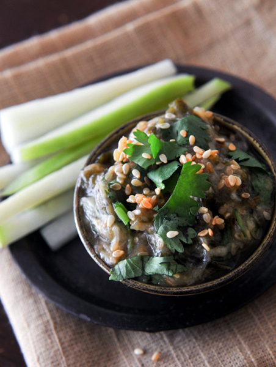

"One of the testiest green chili dips you could ever eat." - thaifoodparadise.com
Ingredients for Nam Prik Noom
- 5-6 long green chili peppers
- 5-6 garlic cloves
- 4 Thai shallots
- 1-2 teaspoons of lime juice
- 1-2 teaspoons of fish sauce
- 1/2 teaspoon of palm sugar or white sugar
- Roughly chopped cilantro for garnishing
How to make Nam Prik Noom
- Add chilies, garlic and shallots to a pan over medium heat and leave them until they become scorched.
- Remove the ingredients and leave it to cool for 5-10 minutes.
- Peel skins from chilies, garlic and shallots
- Place garlic and shallots in a mortar and roughly pound them.
- Add chilies and pound until they are mixed.
- Add fish sauce, lime juice and palm sugar and pound a couple more times.
- Garnish with cilantro and serve in a small bowl.